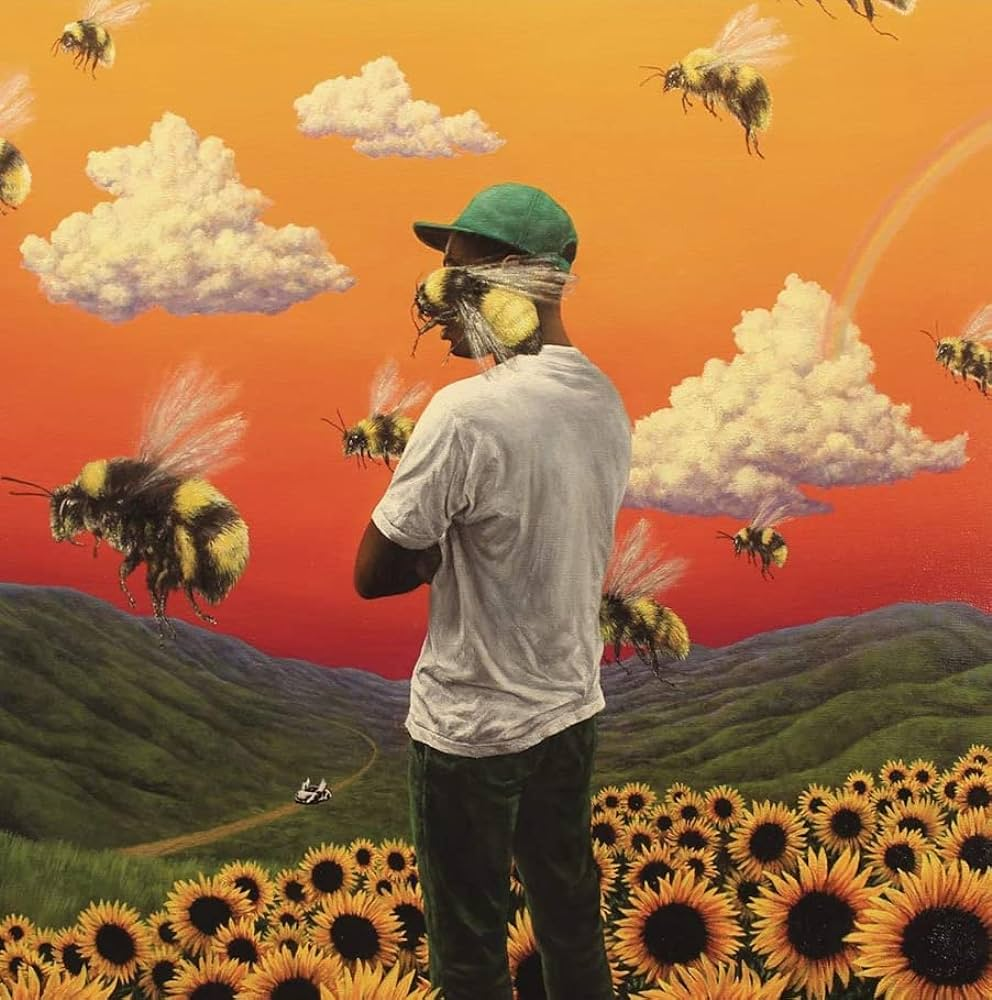

Tyler Gregory Okonma (born March 6, 1991), known professionally as Tyler, the Creator, is an American rapper, singer, record producer, and fashion designer. Okonma became known in the late 2000s when he emerged on the internet as the leader and co-founder of the music collective Odd Future, in which he participated as a rapper, producer, director and actor, releasing studio albums that he produced himself for its respective members and performing on his sketch comedy show Loiter Squad.
My favorite song of his songs is sweet/ i thought you wanted to dance.
